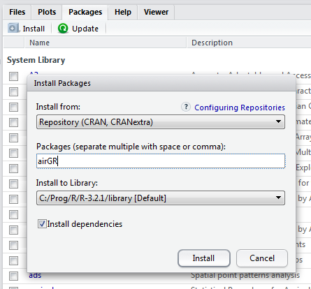

airGR: the IRSTEA GR Hydrological Models in R Packages
Update: 2019-04-05
1 What is the airGR package?
1.1 Presentation
airGR is a package which brings into the R software the hydrological modelling tools used and developed at the Catchment Hydrology Research Group of Irstea (France), including the GR rainfall-runoff models and a snowmelt and accumulation model, CemaNeige. Each model core is coded in Fortran to ensure low computational time. The other package functions (i.e. mainly the calibration algorithm and the efficiency criteria calculation) are coded in R.
The airGR package has been designed to fulfill two major requirements: to facilitate the use by non-expert users and to allow flexibility regarding the addition of external criteria, models or calibration algorithms. The names of the functions and their arguments were chosen to this end. airGR also contains basics plotting facilities.
1.2 The airGR hydrological models
Six hydrological models and one snowmelt and accumulation model are implemented in airGR. The snow model can be used alone or together with the daily hydrological models.
The models can be called within airGR using the following functions:
RunModel_GR4H(): four-parameter hourly lumped hydrological model (Mathevet 2005)RunModel_GR4J(): four-parameter daily lumped hydrological model (Perrin, Michel, and Andréassian 2003)RunModel_GR5J(): five-parameter daily lumped hydrological model (Le Moine 2008)RunModel_GR6J(): six-parameter daily lumped hydrological model (Pushpalatha et al. 2011)RunModel_GR2M(): two-parameter monthly lumped hydrological model (Mouelhi 2003; Mouelhi et al. 2006a)RunModel_GR1A(): one-parameter yearly lumped hydrological model (Mouelhi 2003; Mouelhi et al. 2006b)RunModel_CemaNeige(): two-parameter degree-day snowmelt and accumulation model (Valéry, Andréassian, and Perrin 2014)RunModel_CemaNeigeGR4J(): combined use of GR4J and CemaNeigeRunModel_CemaNeigeGR5J(): combined use of GR5J and CemaNeigeRunModel_CemaNeigeGR6J(): combined use of GR6J and CemaNeige
The GRP forecasting model and the Otamin predictive uncertainty tool are not available in airGR.
2 Installation
You can install the two packages with the following command (for airGRteaching, replace airGR with airGRteaching):
install.packages("airGR")If you use RStudio, you can use the Packages interface :

You can download the airGR source, Windows binaries or Mac OS X binaries on the CRAN.
3 Misc
3.1 How to cite the packages
To cite the airGR and the airGRteaching packages in your scientific document, please use the references returned by the citation() function (replace airGR with airGRteaching for the latter):
citation("airGR")
To cite airGR in publications use these two references:
Coron, L., Thirel, G., Delaigue, O., Perrin, C. and Andréassian, V. (2017). The Suite of Lumped
GR Hydrological Models in an R package. Environmental Modelling and Software, 94, 166-171. DOI:
10.1016/j.envsoft.2017.05.002.
Coron, L., Delaigue, O., Thirel, G., Perrin, C. and Michel, C. (2019). airGR: Suite of GR
Hydrological Models for Precipitation-Runoff Modelling. R package version 1.2.13.16. URL:
https://CRAN.R-project.org/package=airGR/.
To see these entries in BibTeX format, use 'print(<citation>, bibtex=TRUE)', 'toBibtex(.)', or set
'options(citation.bibtex.max=999)'.To retrieve a “.bib” format for LaTeX documents, you can use the following command:
toBibtex(citation("airGR"))@Article{,
title = {The Suite of Lumped {GR} Hydrological Models in an {R} package},
author = {L. Coron and G. Thirel and O. Delaigue and C. Perrin and V. Andréassian},
journal = {Environmental Modelling and Software},
year = {2017},
pages = {166-171},
volume = {94},
doi = {10.1016/j.envsoft.2017.05.002},
}
@Manual{,
title = {{airGR}: Suite of {GR} Hydrological Models for Precipitation-Runoff Modelling},
author = {L. Coron and O. Delaigue and G. Thirel and C. Perrin and C. Michel},
journal = {R News},
year = {2019},
note = {R package version 1.2.13.16},
url = {https://CRAN.R-project.org/package=airGR/},
}3.2 Known places where airGR is used
airGR_map <- readRDS("data/airGR_users_map.rds")
airGR_map_lib <- airGR_map$dependencies[[1]]$src$file
airGR_lfl_lib <- sapply(.libPaths(), function(x) gsub("(.*/library)(.*)", paste(x, "\\2", sep = ""), airGR_map_lib))
airGR_lfl_lib <- airGR_lfl_lib[file.exists(airGR_lfl_lib)][1]
airGR_map$dependencies[[1]]$src$file <- airGR_lfl_lib
leaflet::setView(airGR_map, lng = 30.0, lat = 20.0, zoom = 1)References
Le Moine, Nicolas. 2008. “Le Bassin Versant de Surface Vu Par Le Souterrain : Une Voie d’amélioration Des Performances et Du Réalisme Des Modèles Pluie-Débit ?” PhD thesis, Université Pierre et Marie Curie, Paris 6. http://webgr.irstea.fr/wp-content/uploads/2012/07/2008-LE_MOINE-THESE.pdf.
Mathevet, Thibault. 2005. “Quels Modèles Pluie-Débit Globaux Au Pas de Temps Horaire ? Développements Empiriques et Comparaison de Modèles Sur Un Large échantillon de Bassins Versants.” PhD thesis, Paris: ENGREF. http://webgr.irstea.fr/wp-content/uploads/2012/07/2005-MATHEVET-THESE.pdf.
Mouelhi, Safouane. 2003. “Vers Une Chaîne Cohérente de Modèles Pluie-Débit Conceptuels Globaux Aux Pas de Temps Pluriannuel, Annuel, Mensuel et Journalier.” PhD thesis, Paris, ENGREF. http://webgr.irstea.fr/wp-content/uploads/2012/07/2003-MOUELHI-THESE.pdf.
Mouelhi, Safouane, Claude Michel, Charles Perrin, and Vazken Andréassian. 2006a. “Stepwise Development of a Two-Parameter Monthly Water Balance Model.” Journal of Hydrology 318 (1-4): 200–214. doi:10.1016/j.jhydrol.2005.06.014.
———. 2006b. “Linking Stream Flow to Rainfall at the Annual Time Step: The Manabe Bucket Model Revisited.” Journal of Hydrology 328 (1-2): 283–96. doi:10.1016/j.jhydrol.2005.12.022.
Perrin, Charles, Claude Michel, and Vazken Andréassian. 2003. “Improvement of a Parsimonious Model for Streamflow Simulation.” Journal of Hydrology 279 (1-4): 275–89. doi:10.1016/S0022-1694(03)00225-7.
Pushpalatha, Raji, Charles Perrin, Nicolas Le Moine, Thibault Mathevet, and Vazken Andréassian. 2011. “A Downward Structural Sensitivity Analysis of Hydrological Models to Improve Low-Flow Simulation.” Journal of Hydrology 411 (1–2): 66–76. doi:10.1016/j.jhydrol.2011.09.034.
Valéry, Audrey, Vazken Andréassian, and Charles Perrin. 2014. “’As Simple as Possible but Not Simpler’: What Is Useful in a Temperature-Based Snow-Accounting Routine? Part 2 - Sensitivity Analysis of the Cemaneige Snow Accounting Routine on 380 Catchments.” Journal of Hydrology, no. 517(0): 1176–87. doi:10.1016/j.jhydrol.2014.04.058.